The invention of cameras and the subsequent development of photography revolutionized the way we relate to visual content. Unlike human-drawn paintings, photographs could capture an instant of reality with remarkable speed and accuracy. This new form of image-making was a significant departure from traditional art forms that relied on subjective interpretation and representation. Through a camera, we can fix a moment in time, providing an illusion of objectivity (Batchen 1997).
From a post-phenomenological perspective, the use of a camera introduces a certain degree of technological opacity (Eede 2010) (see Section 3.1), which conceals elements of interaction that bring about a subjective bias. The intimate relationship that photographers develop with their favorite cameras, or the habits that they unconsciously form through daily use, are inevitably reflected in the output they produce. As Flusser put it, Furthermore, the social ecosystem around photography informs about the ways the technology can and should be used, subtly influencing the act of taking photos.
Vilém Flusser was a Czech-Brazilian philosopher and media theorist who is best known for his work on communication, technology, and culture. He wrote extensively about the impact of new media technologies on human perception and understanding of reality. According to (Flusser 2000), a photograph is not simply an image captured by a camera, but rather the result of a complex set of programs that determine how the camera operates and how the resulting image is produced. These programs are embedded within what he calls the photographic apparatus - a system that includes not only cameras and film, but also printing processes, distribution networks, and cultural institutions that shape our understanding of photographic images.
Relationality is a key factor in Flusser’s understanding of the photographic apparatus. He argues that the apparatus is not simply a technological system, but rather a social and cultural one that shapes our relationships with each other and with the world around us (Flusser 2000). Flusser suggests that the photographic apparatus creates a network of relationships between photographers, subjects, viewers, and cultural institutions. These relationships are shaped by the programs embedded within the apparatus - for example, by determining what kinds of images are considered valuable or meaningful. Once again we see elements of Press governing the selection module of the creative process.
Using the post-phenomenological framework, we can compare traditional image-making technologies to photography by formalizing them as different forms of mediation:
(I — Brush) → Painting
I → Camera / Apparatus (— Photo)
With the advent of digital cameras and mobile phones, the apparatus has grown to include social media and communication platforms, creating a vast ecosystem that could produce and distribute visual content at exponentially growing rates. The selection displayed through these channels is often the result of algorithms that suggest visual content based on what is most to the user, based on previous data. Generative imaging tools, might expand the apparatus to a whole new level, redefining the conceptual boundaries of photographs and digital images.
Image generation with ML is a relatively recent field, which emerged from the progress made in computer vision (see Section 2.2.7). One of the first examples of DL tools for image generation is the Generative Adversarial Networks (GAN) architecture developed by (Goodfellow et al. 2014). Similarly to the collaboration presented in Chapter 4, the purpose of this study is to understand how the process of image-making changes when we introduce D[] in the mediating relation. We could describe the technological mediation offered by this type of technology in this form:
Generation: I → GAN/(Model→Dg[seed])(−Image)
Training: I → GANtraining/(Rtraining[Dd,Dg]→DataSet)(−Dg)
where Dg is the generator component of a GAN that has been trained against a discriminator Dd, seed is a variable intended as the random seed that guarantees a specific output image in a deterministic way, and Rtraining is the training script. Building on the experience gained while working with DL tools in the previous study, our focus in this exploratory practice is shifted towards the act of building Dg as context for self-reflection.
The insight gained from the collaboration in the music domain had revealed the difficulties of working with small datasets. After sharing the insights from the first study with a fellow PhD researcher, we looked at what was the smallest amount of images that would constitute a viable dataset for image generation. We found that FastGAN (B. Liu et al. 2021) claimed it was able to produce coherent output using datasets of as little as 100 images. This discovery inspired us to lead investigation into dataset curation utilizing reflective practices.
Our intuition was that curating our own dataset could reveal our inherent biases in defining a coherent visual concept. In order to do so we identified a unique, locally-specific feature and compiled a dataset of 50 images that attempted to capture its essence. Our objective was to observe the output produced by FastGAN after training it with these photos and engage in a reflective exercise.
As theoretical framework of reference we adopted Schön’s theory of reflection (Schön 1983). According to Schön, reflection on action refers to the process of reflecting on past experiences after they have occurred. This type of reflection involves looking back at what happened, analyzing it, and drawing conclusions that can be applied to future situations. Reflection on action is often used as a tool for learning from experience and improving performance over time. On the other hand, reflection in action refers to the process of reflecting while engaged in an activity or task. This type of reflection involves being aware of one’s own thought processes and actions as they are happening, and making adjustments based on this awareness.
We performed two iterations of photo-taking, model-training and output evaluation. After the first iteration, we had a session dedicated to reflection on action. During this which set us in motion for the second iteration, with increased self-awareness about how and what we were choosing to include in the dataset.
The first dataset was composed of images that my collaborator deemed to be representing of a specific type of storefront in Sham Shui Po, a local Hong Kong neighborhood (Figure 5.1). The images were then cropped to 1:1 ratio for the training process. We generated intermediate steps and checkpoints every 1000 learning iterations to check the progress. We sampled images from different checkpoints: 15,000, 25,000, 50,000 iterations (Figure 5.2). After joint evaluation of the output we identified that 25,000 iteration was the ideal value for our purposes. We noticed that checkpoints with more iterations were over-fitting the data and simply regenerated almost exactly a few training examples.
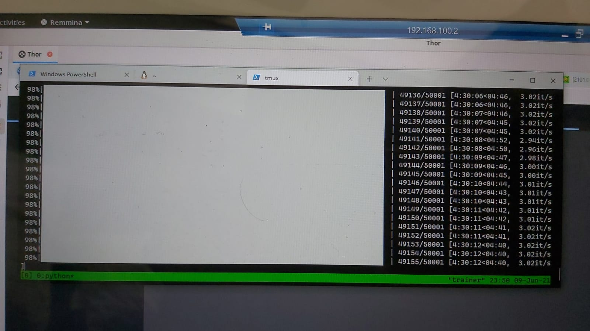
After this first iteration of training and evaluation we performed a reflection on action. We looked back at our process, paying attention to particular aspects of the photo-taking identified by our reflection in action and how they were linked the results. We noticed that FastGAN had picked up on the visual similarity across some the photos in the first set due to the specific type of framing that my colleague had used: the majority of the generated images of storefronts would have a darker element in the center, highlighting a pattern that was originally overlooked. Most shops photographed indeed portrayed a dark corridor at the center of the shot, which was a characteristic element in our set due to both the choice of shops and the type of framing that was habitual to the photographer.
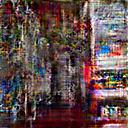
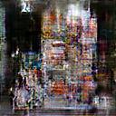
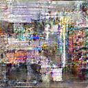
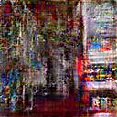
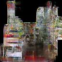
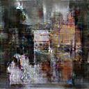
By observing this recurrent characteristic of the generated images we were able to gain some insight about how our own biases were reflected in the selection of images for our dataset. Enriched by this reflective experience, we then proceeded to our second iteration. We first identified images that were not matching the typical emerging pattern and removed them from the set. For example, we took out a few images of closed shops which we identified as not helpful for generation. Next, we integrated the original 50 images with another set that was taken after our reflective session. The set used for the second iteration was ultimately composed of 100 images selected among all the images taken during his two sessions.
After running the training script again, we evaluated the generated pictures after 25,000 iterations. We found that the images had more variety and they all contained visual elements typical of the shops we used as input. The central corridor, the many items hanging on display on both sides, cluttered shelves and white neon lights (see Figure 5.4).
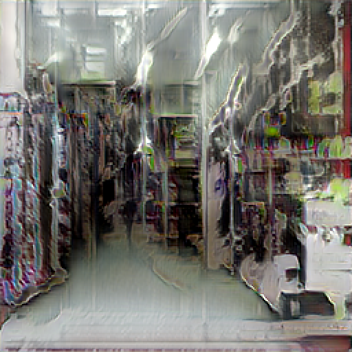
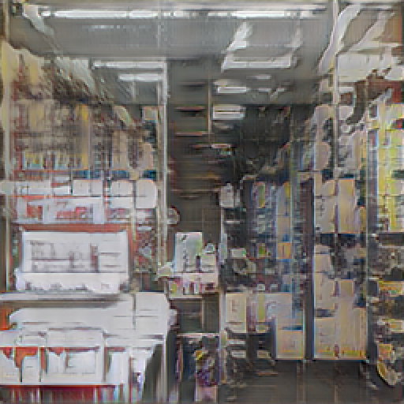
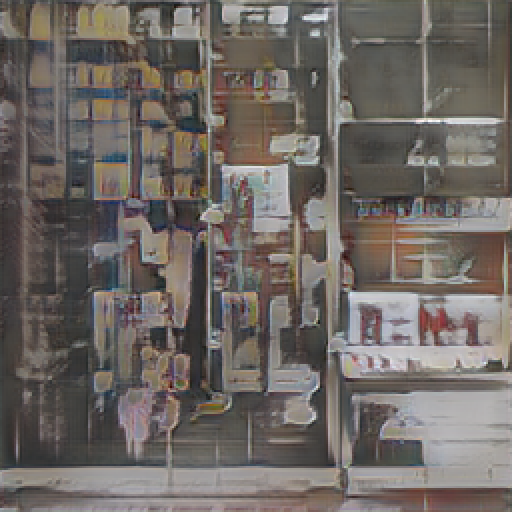
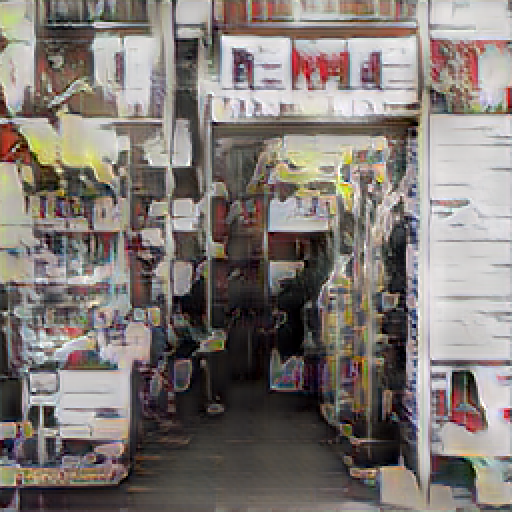
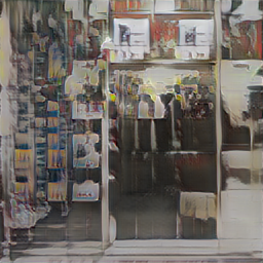
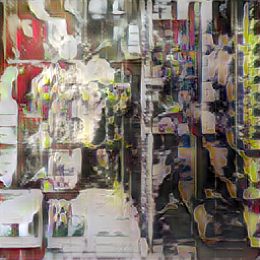
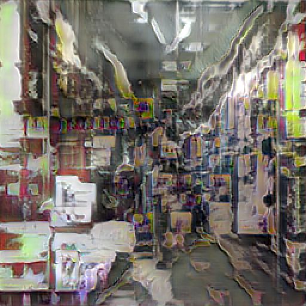
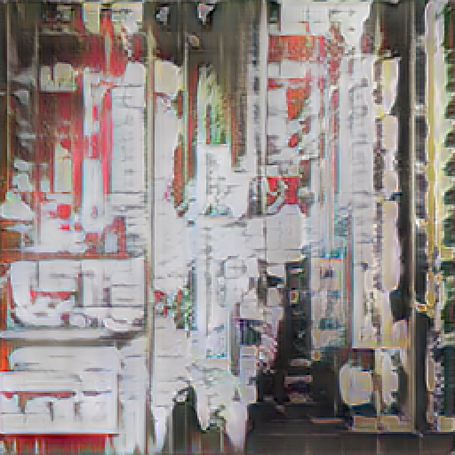
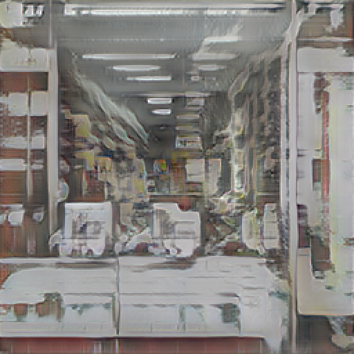
In our final reflection on action, we focused on identifying which elements of our process affected the creation of the dataset and its coherence. In addition to what emerged from the first iteration in relation to the act of photo-taking, we recognized how our criteria of selecting the images that would go into the dataset had changed after we had experienced its output. What became clear to us is that the algorithm was primarily concerned with pixel-based visual similarity rather than the more abstract conceptualization of similarity that we had in mind. This realization made us change the way we took and selected photos for our second iteration in order to figuratively .
In terms of ACASIA modules, this collaboration might be described as follows:
Association and selection as dataset curation. In this study we took charge of directing the association making component of ACASIA by assembling a dataset according to our own selection of images, which was governed by our on our own definition of similarity.
Combination and abstraction through GAN training and generation. The abstraction component is mediated through the GAN algorithm, which, once trained, performs the combination making step accordingly. Our reflection sessions uncovered the differences between our notion of similarity and the algorithm’s one, which is based on quantifiable measures utilizing pixel information, rather than conceptual interpretation.
Integration and adaptation. The integration and adaptation components of ACASIA did not come into play during this study. We observed the generated images as they came out from the generator without any additional step. Given the objective of this study was to understand more in depth the process of dataset curation, these components were not considered relevant to our goal.
As a result of our exploratory practice, we gained valuable insight regarding how our notion of similarity might include subjective elements which the algorithm did not pick up on. In fact, the loss function used by FastGAN deals with quantifiable measures purely based on perceptual qualities of pixels in the images, rather than on the conceptual elements which our mind habitually abstracts to. For this reason, the algorithm exposed our own bias towards what constitutes the similarity found in our dataset, a fact that became evident in our reflective sessions.
The insights gained through this study could be summarized as follows:
Dataset curation as reflective practice. We have shown that the act of creating and curating a dataset can be conducive to fruitful self-reflection. By observing the generated output we were able to reflect on our own bias regarding the properties of a coherent set of photos representing a concept.
GAN similarity measures operate at pixel-level. Our choice of tool, FastGAN, revealed that the primary distinction in the algorithm’s image interpretation is its focus on pixel-level representation rather than a conceptual one. Although this has provided insights into our understanding of similarity, it also raises the question of whether this method aligns with how humans form associations based on similarity.
A balance between coherence and variations. In our evaluation sessions we identified a very clear trade-off between the amount of training and the novelty of output produced. There is an optimal point during training that maximizes both coherence and originality of generated images. Before that point, the model tends to be incoherent, while further training beyond that point causes the generated images to look exactly like the ones in the dataset, due to over-fitting. It seems impossible to predict where this point is a priori, the only way that we could identify the ideal balance was through observation. It is possible that this tipping point is fully dependent on the subject chosen.
Overall, this collaboration proved productive, as it generated valuable insights into dataset curation within the context of small sample sets. Most GANs typically require a minimum of 10,000 images; however, assembling such datasets can be challenging for non-experts. FastGAN has enabled us to experiment with image generation on a smaller scale, which was previously unattainable. This opportunity has allowed us to delve deeply into understanding the concept of visual similarity from a human perspective and compare it with machine-based computations.
The results of this study also highlight the limitations of probabilistic approaches when dealing with concepts that are very local and specific. As pointed out for PT in Section [sec:the-missing-prototypes-problem], humans are indeed able to apply concepts even with few or no examples available. In this study, the similarity space is defined solely in terms of visual aspects within the concept and does not cover the extensive scope needed for comparisons with other concepts.
Furthermore, as in the previous study, we had no way to guide the generation towards a desired location in latent space. The technology simply does not provide a means to control the output, other than curating the training dataset. This mirrors the discussion in Section [sec:the-problem-of-compositionality] regarding the challenges PT faces when dealing with compositionality. To understand an image and its representation, it may be necessary to break it down into smaller components and their relationships. The type of compositionality found in the visual domain is not entirely analytical (unless we use a plotter, for example), making it suitable for representation by a probabilistic model. GANs, however, only decompose images at pixel-level, rather than at a conceptual level, which makes it more difficult for humans to relate to. As the themes explored in the next study will demonstrate, language appears to be the ideal medium for connecting humans with visual concepts.
The individual human subject simply did not exist anymore, once he or she had set the boundary conditions for the image to be computed.